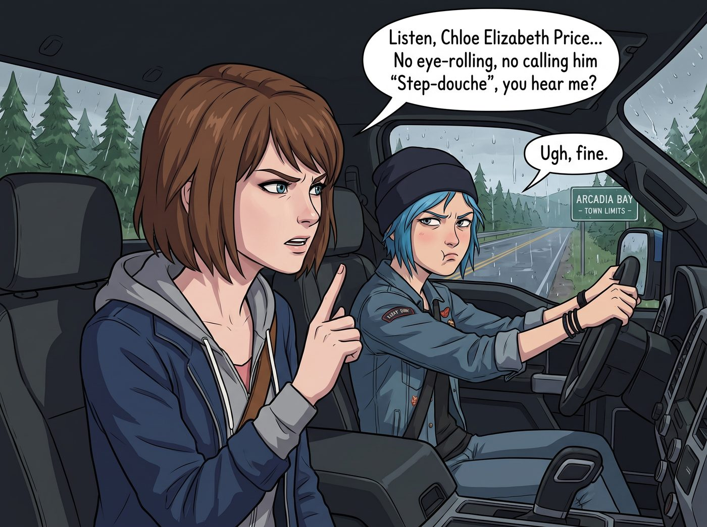
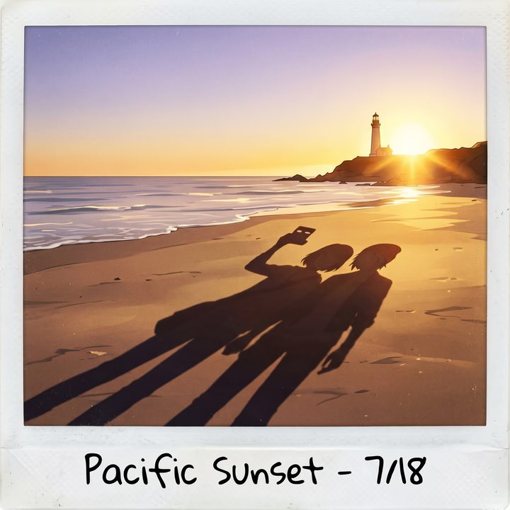

成熟的手信


猛禽皮卡沿著 101 號公路一路向北，當車窗外的風景從加州的棕櫚樹逐漸變回熟悉的冷杉林時，阿卡迪亞灣（Arcadia Bay）那股混合著海鹽與松針的濕潤空氣，再次湧入了車廂。
隨著皮卡駛入小鎮的邊界，Max 轉過頭，用一種極度嚴肅的「超級麥克斯」專屬眼神，死死盯著正在開車的 Chloe。
「聽著，Chloe Elizabeth Price。」Max 伸出一根手指，開始了見家長前的『預防性鎮壓』，「我們等一下就要見到 Joyce 和 David 了。我不管妳有多想嘲笑他的鬍子，也不准再翻那些監視器的舊帳。今天，妳必須表現得像個成熟的、情緒穩定的成年人。不准翻白眼，不准說『Step-douche（混蛋繼父）』，聽到沒有？」
Chloe 撇了撇嘴，雙手搭在方向盤上，做出一副極度委屈的表情：「遵命，長官。但妳不能剝奪我作為叛逆青年的基本人權。我給他準備的禮物可是充滿了『加州特色』的。」
說到禮物，這可是兩人在洛杉磯跳蚤市場裡精挑細選的。
給 Joyce 的手信毫無爭議。她們在 66 號公路旁的一家古董店裡，淘到了一件保存完好的、1950 年代加州經典汽車餐廳的刺繡圍裙，還附帶了一份當年的原版菜單。這對在雙鯨魚餐廳（Two Whales Diner）操勞了大半輩子的 Joyce 來說，絕對是最完美的禮物。
但給 David 的禮物，卻引發了一場激烈的爭奪戰。
Chloe 原本執意要買一個印著「外星人綁架了我的理智」的鋁製錫牌，或者一件寫著「加州最棒的退伍老保全」的惡搞 T 恤。
但在 Max 的強勢鎮壓下，那件 T 恤被硬生生地塞回了貨架。Max 最終用她那敏銳的實用主義眼光，在一家軍用剩餘物資店裡，挑選了一把頂級的 Leatherman 黑色戰術多功能鉗。
「這才是成年人的和解方式。」Max 當時是這麼說的，「用一把好用的工具，堵住退伍老兵的嘴。」
事實證明，Max 的策略無比正確。
當她們推開家門時，Joyce 高興得紅了眼眶，立刻繫上那條復古圍裙，衝進廚房給她們熱了兩大碗濃郁的蛤蜊巧達湯。
而一直板著臉、試圖維持一家之主威嚴的 David，在接過那把沉甸甸的戰術多功能鉗時，眼睛裡閃過了一絲難以掩飾的喜愛。他熟練地彈出刀片和鉗口，發出一聲粗獷的讚嘆，甚至破天荒地對著 Chloe 點了點頭：「這玩意兒……比我配發的那把還要好。謝了，Chloe。」
Chloe 不自然地抓了抓藍色的頭髮，傲嬌地偏過頭：「別誤會，是 Max 挑的。我本來想給妳買個搞笑錫牌的。」
雖然依然有些彆扭，但那個曾經充滿爭吵、監視與摔門聲的房子裡，此刻卻瀰漫著一種笨拙而真實的溫情。在雙保結局的時間線裡，他們都在學著如何帶著傷痕，重新成為真正的一家人。
傍晚時分，兩個人找了個藉口溜出了屋子，開著皮卡，沿著那條蜿蜒的土路，駛向了小鎮最高處的燈塔。
這不是她們經歷過那場災難後第一次回到這裡，但每一次站在這片懸崖上，看著下方平靜的阿卡迪亞灣，那種穿越了時空與生死的宿命感，依然會讓她們心跳加速。
沒有毀滅小鎮的巨大龍捲風，沒有被撕裂的天空。只有太平洋溫柔的海浪聲，以及將整座燈塔染成金黃色的夕陽。
Chloe 雙手插在皮夾克的口袋裡，靠在懸崖邊的木欄杆上。海風吹亂了她的藍髮。
「妳知道嗎，Max。」Chloe 看著遠處閃爍的海面，聲音變得異常輕柔，「有時候我會在二號車廂的床上醒來，聽著飛機飛過的聲音，看著 Victoria 在抱怨，聽著 Lily 敲鍵盤……我會覺得那一切像是一場夢。我會害怕下一秒醒來，我又回到了那個妳離開我五年、我爸剛剛去世的黑暗房間裡。」
Max 走到她身邊，沒有說話，只是輕輕地將自己的手塞進了 Chloe 的口袋裡，與她十指緊扣。
「但當我握住妳的手，或者看到妳舉起那台破相機的時候，我就知道這是真實的。」
Chloe 轉過頭，那雙桀驁不馴的藍色眼眸裡，此刻只倒映著 Max 一個人的影子。
「我很喜歡普吉特海灣的那個車廂。Lily 雖然是個變態，但她用報表保護了我們；Victoria 雖然討人厭，但她出錢出力；Kate 烤的餅乾是世界上最棒的。」
她頓了頓，笑了一下。
「我有時候會想，我好像有兩個家了。一個是剛才那棟房子，Joyce 會端出蛤蜊湯，David 會對著一把鉗子點頭；另一個在普吉特海灣，吵得要命，帳算得要命。以前的我，連一個家都覺得撐不住。」
「不過對那個小書呆子來說，車廂可能是她唯一的家。」Chloe 看著海面，聲音低了下來，「所以我們得替她好好守著。」
Chloe 頓了頓，低下頭，將額頭輕輕抵在 Max 的額頭上，聲音沙啞而深情：
「但對我來說……只要有妳在的地方，才是阿卡迪亞灣。妳才是我的燈塔，超級麥克斯。」
這不是 Chloe 第一次說情話，但在這座曾經見證了她們生死抉擇的燈塔前，這句話有著超越時間的重量。
Max 的眼眶微熱。她沒有用語言回答，而是踮起腳尖，迎著海風與夕陽，深深地吻住了這個她不惜逆轉時間也要救下來的女孩。
懸崖上的野草在風中搖曳，海鷗的鳴叫聲漸行漸遠。這個吻裡沒有了曾經的恐懼與絕望，只有漫長旅途後的安心，以及對未來的無限確信。
一吻結束，Max 依然靠在 Chloe 的懷裡，她單手舉起寶麗來相機，對著兩人在夕陽下拉長的倒影，盲拍了一張。
「喀嚓。」
相紙緩緩吐出。Max 看著漸漸顯影的畫面，笑著在背面寫下這場公路旅行的最後一條規則：
『規則第 78 條：公路旅行的終點，不是把錢花光，也不是逃離行政黑魔法的監控。而是當妳回到一切開始的地方時，妳發現那個每天早上跟妳搶咖啡、晚上跟妳搶被子的人，依然緊緊握著妳的手。下一站，二號車廂，我們回家。』